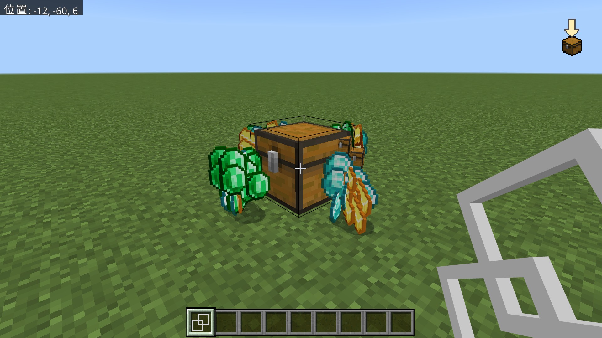

自分のサイトを持つってなんか憧れませんか？
作った理由なんてそんなもんです。大それた目的がある訳ではないです
あんまり見る人もいないでしょうから、軽い日記やメモ的な使い方をしようと思っています
でも人並みに承認欲求があるので認知されたくて役に立ちそうなことを書くかもしれません 知らんけど
サイト自体はかなりシンプルなつくりなので、HTMLとかの勉強の役に立つかも
バイト面接n敗目…そろそろ受かって働きたい！！
なんで落とされるんですか？どの辺がだめ？？？コミュ障だから？？？
謎はフカマルばかり…
有名なMODのクリックまな板を統合版アドオンで再現したやつです
クリックまな板（手に持つやつ）とクリックまな板ブロックを作りました

↑クリックまな板のテストをしている様子
きっかけは別のアドオンを作ってるときにgetItemメソッドとspawnItemメソッドを見つけて、
「これ、もしかしてgetItemで手に持ってるアイテム取得して、spawnItemで出現させればまな板ブロックできそう？」
と気付いたことです
ついでにLootコマンドにいつの間にかmineオプションが追加されていたので手持ちの方も作れました
いぇーい バグあるけど
いずれはカジュアル工業アドオンみたいなのを作って工業MODの楽しさを広めていこうと思っているので、
技術力を高めるいい機会になりました
こちらかクラフターズコロニーの方からダウンロードできますのでぜひ遊んでみてください！！
ご拝読ありがとうございました
バイト探したり、絵の練習をしたり色々やることがあるので次回は未定です
誰も読んでいないからいっか！！
～完～